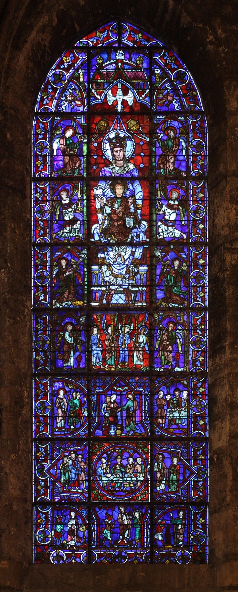
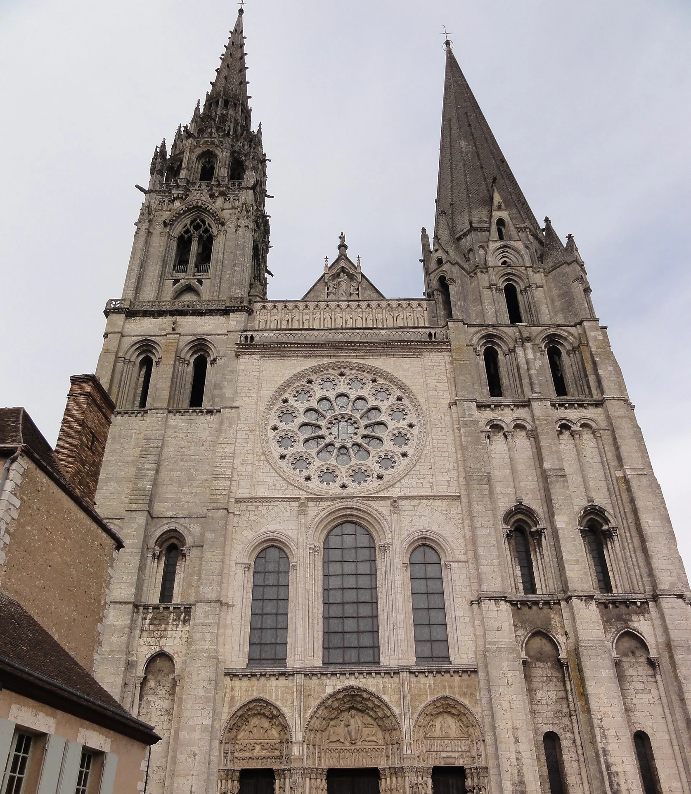
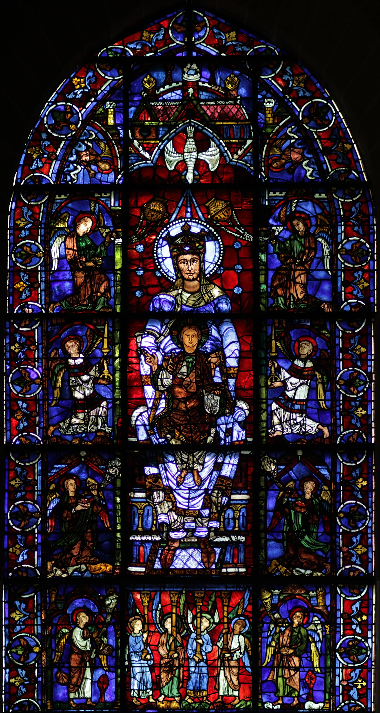
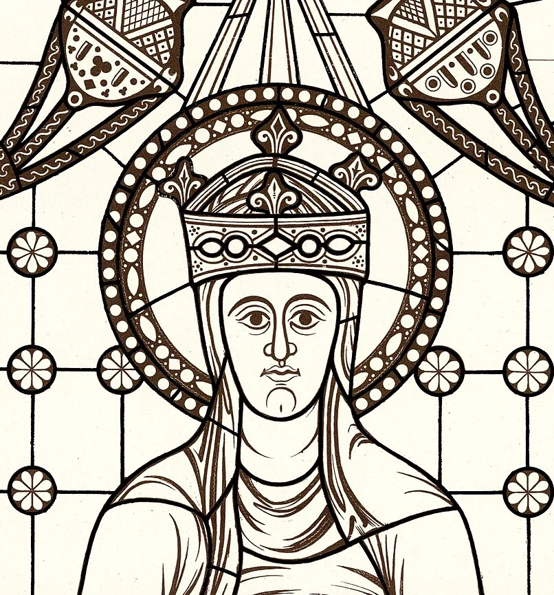
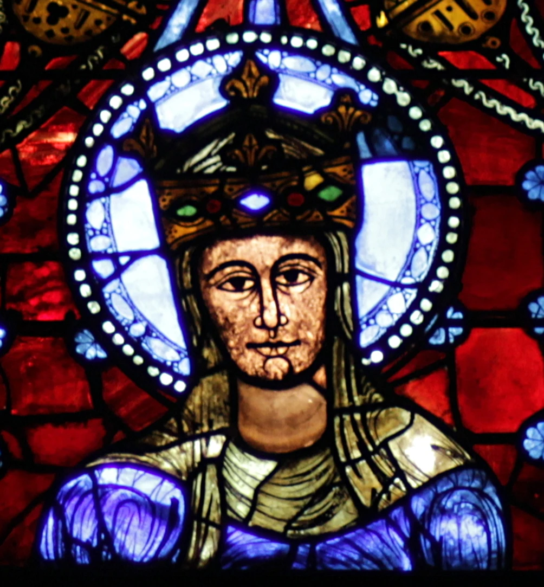
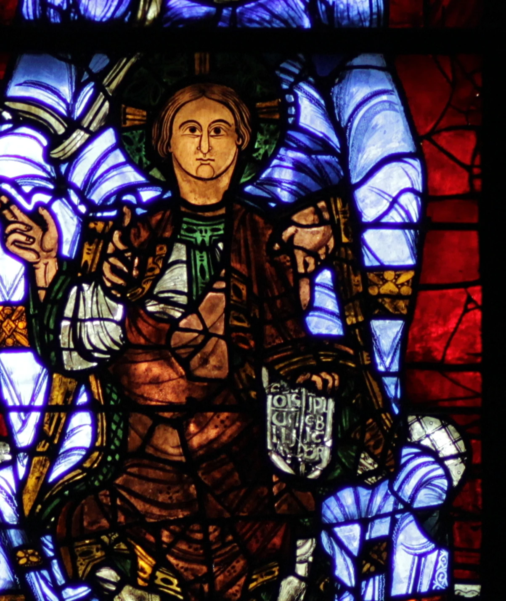
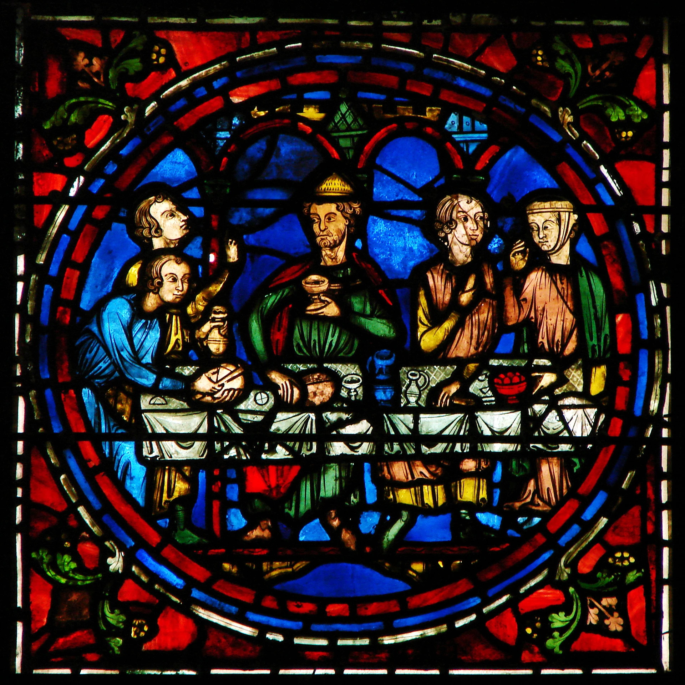

아직 펼치지 않은 카드성모와 아기 · 3아름다운 유리창의 성모물감이 아니라 유리로 그렸다면, 무엇이 달라질까요?유리로 그린 그림이야. 해가 비치면 어떻게 될까?
1180년 무렵 · 13세기 · 1906년프랑스 샤르트르 · 성모 대성당 남쪽, 성가대석 입구
아름다운 유리창의 성모
프랑스 샤르트르 대성당의 남쪽, 성가대석으로 들어가는 곳에 유리창 하나가 있어요. 가운데의 파란 성모는 1194년 큰불을 견딘 유리예요. 유리 그림은 해가 뒤에서 비쳐야 살아나요. 어두운 창을 손으로 문질러 햇빛을 비춰 보세요.
불에서 살아남은 유리창이야. 해님이 비추면 그림이 반짝 살아난대. 손으로 해를 비춰 볼까?
검수 전 시안이에요(기준서 2판). 장면에는 기록에 있는 것만 옮겼고, 자료마다 다른 것은 그렇다고 밝혔어요. 상상은 ‘눈 감고 상상해 보기’에만 썼어요.
시안 확인용카드 단계 미리 보기
1
불길을 견딘 유리
프랑스 샤르트르의 성모 대성당이에요. 1194년, 큰불이 옛 대성당을 태웠어요. 사람들은 그 뒤 26년 동안 대성당을 다시 지었어요.
불길을 견딘 것도 있었어요. 12세기 가운데쯤 지은 서쪽 정면과 그 큰 유리창들, 그리고 성모와 아기를 그린 유리 한 장이에요.

땅 밑에는 1020년부터 풀베르 주교가 지은 옛 대성당의 지하 경당(크립트)이 남아 있어요. 길이가 200미터가 넘어, 프랑스에서 가장 큰 지하 경당이에요.
아주 큰 성당이야. 옛날에 큰불이 났는데, 살아남은 유리가 있었대.
물어보기불이 나면 유리창은 어떻게 될까?
2
새 창에 앉은 옛 성모
불길을 견딘 12세기 창들 가운데, 13세기의 장인이 다시 쓸 만큼 귀하게 여긴 것은 이 성모와 서쪽 끝의 큰 창들뿐이었어요. 성모는 대성당 남쪽, 성가대석(제단 앞에서 성직자들이 노래하며 기도하는 자리)으로 들어가는 곳의 창에 다시 앉았어요.
둘레의 파란 칸들은 13세기에 만든 유리예요. 향로와 초를 든 천사들이 성모를 둘러싸요. 아래에는 예수가 광야에서 시험받은 이야기와, 가나의 혼인 잔치에서 물을 포도주로 바꾼 이야기가 있어요. 모두 스물네 칸이에요.
이 성모는 여러 백 년 동안 사람들이 특별히 공경해 온 그림이에요. 15세기부터 사람들은 이 창을 ‘노트르담 드 라 벨 베리에르(Notre-Dame de la Belle Verrière)’, 곧 ‘아름다운 유리창의 성모’라고 불렀어요. ‘푸른 성모’라고도 불러요.
가운데 성모님은 불에서 건진 옛날 유리야. 둘레의 천사들은 나중에 만들었어.
물어보기천사들은 손에 무엇을 들고 있어?
3
햇빛이 닿으면
유리 그림은 빛이 뒤에서 들어와야 보여요. 해가 없으면 창은 어둡고, 해가 들면 색이 살아나요.
이 창은 대성당의 남쪽에 있어서, 맑은 날이면 낮 동안 해를 받아요. 손가락으로 문질러 어두운 창에 햇빛을 비춰 보세요. 다섯 곳에 이름이 숨어 있어요.
손가락이나 마우스로 문질러, 어두운 창에 햇빛을 비춰 보세요.

창의 윗부분과 천사 테두리 · 사진: Eusebius(자른 이 Michelet-密是力) · 퍼블릭 도메인 · 위키미디어 공용
빛이 닿으면 숨은 표시가 나타나요.
1180년 무렵의 성모, 13세기의 천사들, 1906년에 고친 얼굴이 한 창 안에서 함께 빛나요.
붉은 바탕 위의 성모와 아기는 1180년 무렵의 유리예요. 그 둘레, 파란 바탕에 천사들이 있는 칸은 13세기에 만들었어요. 서로 다른 때의 유리가 한 창에서 함께 빛나요.
손가락으로 문질러 봐. 해님이 비추면 유리가 반짝 살아나!
물어보기해가 비치니까 무슨 색이 제일 먼저 보여?
4
1906년의 얼굴
1867년 파리의 제국 인쇄소(나라의 인쇄소)에서 펴낸 『샤르트르 대성당 연구서』에는, 이 창을 갈색 선으로 옮겨 그린 석판화(돌판에 그려 찍어 낸 그림)가 있어요. 그 그림 속 성모는 앞을 똑바로 바라봐요.
1906년, 한 유리장이가 성모의 머리를 고쳤어요. 그 뒤로 성모는 보는 사람의 왼쪽으로 고개를 살짝 기울였다고 해요. 아래에서 두 그림을 바꿔 보세요.


유리 그림은 낡거나 깨지면 고쳐 가며 지켜 와요. 그래서 이 창에는 1180년 무렵과 13세기의 유리, 그리고 1906년에 고친 자리가 함께 있어요.
옛날 그림 속 성모님은 앞을 똑바로 봐. 지금은 고개를 살짝 기울였어.
물어보기두 얼굴은 어디가 달라?
5
아기 예수의 책
성모의 무릎에 앉은 아기 예수는 오른손을 들어 복을 빌고, 왼손에는 펼친 책을 들었어요. 책에는 라틴어로 이사야서의 한 구절이 적혀 있어요.
골짜기마다 메워지고 산마다 낮아지며, 험한 길이 평평해지리라는 말씀이에요. 누가복음은 세례 요한을 소개하며 이 말씀을 다시 불러요. 이 창을 소개하는 자료는 이 글을, 하나님이 사람이 되어 오신다는 예언으로 풀어요.

“OMNIS VALLIS IMPLEBITUR. 모든 골짜기가 메워지리라.”
아기 예수가 펼친 책의 글 · 이사야 40장 4절 · 이 안내서가 옮김
아기 예수님이 책을 펼쳤어. “골짜기가 다 메워질 거야.”라고 쓰여 있대.
물어보기깊은 골짜기가 다 메워지면 어떻게 될까?
눈 감고 상상해 보기
한낮, 성모의 창 아래 돌바닥 위로 파랗고 붉은 빛 조각이 흘러내려요. 초 냄새가 은은하고, 사람들은 소리를 낮춰 창 앞에 멈춰 서요. 구름이 지나가면 창이 잠깐 어두워졌다가, 해가 다시 나오면 성모의 파란 옷이 먼저 살아나요.
눈을 감아 봐. 바닥에 파란 빛, 빨간 빛이 반짝반짝 떨어져. 구름이 지나가면 깜깜, 해가 나오면 다시 반짝!
나의 자리
어두운 창에 햇빛이 들자, 아기 예수의 책에 적힌 글이 보였어요. 내 안에서 메워졌으면 하는 골짜기는 어디인가요?
해가 비치면 유리가 반짝 살아났지? 너는 언제 마음이 환해져?
마음에 닿는 한 줄을 고르거나 직접 써 보세요. 한 줄을 남기면 이 자리의 도장이 찍혀요. 이 기기에만 저장돼요.
더 깊이
궁금한 칸만 펼쳐 읽어도 괜찮아요.
알고 보면

스물네 칸 맨 아래 세 칸은 예수가 받은 세 가지 시험, 그 위 여섯 칸은 가나에서 일으킨 첫 기적 이야기예요. 좁은 옆 칸 열 개에는 성모와 아기에게 경의를 표하는 천사들이 있고, 보좌 아래에서는 네 천사가 성모의 보좌를 들어 올려요. 성모의 머리 위 칸에서는 비둘기 모습의 성령이 후광 위로 세 줄기 빛을 내려보내요.
성모의 차림 성모는 작은 깔개를 덮은 발판에 발을 올리고 보좌에 앉았어요. 밝게 빛나는 파란 옷을 입었고, 진주로 테를 두른 파란 후광 위로 화려한 관이 솟아 있어요. 흰 너울이 주름지며 양쪽으로 내려오고, 두 손은 무릎에 앉은 아기의 어깨에 얹었어요.
라쉬스의 연구서 장바티스트 라쉬스(Jean-Baptiste-Antoine Lassus)의 이름으로 1867년에 나온 『샤르트르 대성당 연구서』(Monographie de la cathédrale de Chartres)의 그림 묶음에는, 이 창을 옮겨 그린 석판화가 있어요. 이 카드의 1867년 그림이 그 가운데 한 장이에요.
잘 남은 창들 유네스코는 샤르트르 대성당의 12~13세기 스테인드글라스가 놀랄 만큼 좋은 상태로 남아 있다고 적었어요.
기록마다 다른 점
만든 때 카드 책 앞면과 영어 위키백과는 성모 부분을 1180년 무렵으로 적어요. 가운데 칸들을 12세기 가운데쯤으로 적는 자료(월드 히스토리 백과)도 있어요.
왜 시험과 가나일까 아래 칸에 예수가 일을 시작하던 무렵의 두 이야기, 광야의 시험과 가나의 혼인 잔치를 왜 넣었는지는 학자들의 의견이 하나로 모이지 않았어요.
말씀과 함께 읽기
말씀은 뜻만 옮기고, 본문은 대한성서공회 개역개정으로 이어 드려요.
이사야 40장 3~5절 광야에 주의 길을 닦으라, 골짜기마다 메워지고 산마다 낮아지며 험한 곳이 평지가 되리라는 말씀이에요. 아기 예수의 책에 적힌 글이 이 말씀이에요.
누가복음 3장 4~6절 세례 요한을 소개하며 이사야의 이 말씀을 다시 불러요.
마태복음 4장 1~11절 예수가 광야에서 시험을 받은 이야기예요. 창의 맨 아래 세 칸이에요.
요한복음 2장 1~11절 가나의 혼인 잔치에서 물을 포도주로 바꾼 이야기예요. 그 위 여섯 칸이에요.
직접 가 보기
확인한 날 · 2026년 11월 18일 · 바뀌기 쉬운 정보라 정기적으로 다시 확인해요
샤르트르 대성당은 1년 내내 아침 8시 30분부터 저녁 7시 30분까지 열고, 들어가는 값은 없어요. 6~8월 화·금·일요일에는 저녁 행사 ‘수아레 오트르망’ 때문에 밤 10시까지 열어요. 여섯 가지 말로 듣는 소리 안내기는 대성당 서점에서 빌려요.
「아름다운 유리창의 성모」는 남쪽 회랑, 성가대석으로 들어가는 곳에 있어요. 지하 경당은 기도와 순례로만 들어갈 수 있어요. 여는 때는 바뀔 수 있으니 가기 전에 다시 확인해 주세요.
햇빛 비추기 금박
‘햇빛이 닿으면’에서 다섯 곳을 모두 비추어 읽으면 카드에 금박이 입혀져요.
어두운 창을 비추어 다섯 곳을 모두 찾아 읽기
아이와 끝까지 채색
아이와 함께 영화처럼 보기를 끝까지 보면 카드가 채색돼요.
아이와 함께 ‘영화처럼 보기’를 끝까지 보기
근거 보기 (11)
- Johann Roten(데이턴 대학교 마리아 연구소), 「Das Belle Verrière Fenster der Kathedrale von Chartres」 — 남쪽 성가대석 입구(14번 자리), 스물네 칸, 1194년 불, 13세기의 장인이 다시 쓴 성모와 서쪽 끝의 큰 창, 여러 백 년의 공경과 15세기부터의 이름, 1906년 머리를 고침(앞을 보던 눈길 → 보는 사람의 왼쪽으로 살짝 기운 고개), 성모의 차림, 복을 비는 오른손과 책, 책의 글 OMNIS VALLIS IMPLEBITUR(이사야 40:4 · 누가 3:5, 사람이 되어 오심의 예언), 세 줄기 빛의 비둘기, 보좌를 든 네 천사, 열 칸의 천사, 시험과 가나에 대한 의견이 모이지 않음
- 유네스코 세계유산: Chartres Cathedral — 1145년부터, 1194년 불 뒤 26년 동안 다시 지음, 12세기 가운데의 서쪽 정면, 12~13세기 유리의 좋은 상태
- 샤르트르 대성당 공식 누리집: 크립트 — 1020년 풀베르 주교의 옛 대성당, 200m가 넘는 프랑스에서 가장 큰 크립트, 기도와 순례로만
- 샤르트르 관광청: Visiting the cathedral — 8:30~19:30, 무료, 6~8월 화·금·일 22시(수아레 오트르망), 여섯 가지 말의 소리 안내기
- MIT 도서관 Dome: Chartres Cathedral, Stained Glass — 서쪽 정면의 로마네스크 창과 남쪽 성가대석에 다시 끼운 「아름다운 유리창의 성모」
- 위키미디어 공용: 라쉬스, 『샤르트르 대성당 연구서』 그림 묶음(파리, 제국 인쇄소, 1867) — Feuille B
- 위키미디어 공용: 창 전체 사진 설명(Eusebius) — 붉은 바탕 부분은 12세기, 나머지는 13세기 · 맨 아래는 광야의 시험, 그 위 두 부분은 가나의 혼인 잔치
- 위키미디어 공용: Vassil의 사진 설명 — 붉은 바탕의 성모와 아기는 12세기, 천사들은 13세기 · 가나의 혼인 잔치 칸은 13세기
- Wikipedia: Stained glass windows of Chartres Cathedral — 길잡이(남쪽 회랑 30번 창, 1180년, 큰불 때 가운데의 성모와 아기 칸만 남음)
- World History Encyclopedia: Blue Virgin Window 그림 설명 — 가운데 네 칸을 12세기 가운데쯤으로 적음(기록마다 다른 점)
- Vanderbilt 대학교 도서관 Art in the Christian Tradition — “Notre Dame de la Belle Verriere”(the “Blue Virgin”), 곧 ‘푸른 성모’
그림·사진·소리 출처
- 사진: Eusebius(자른 이 Michelet-密是力) · 퍼블릭 도메인 · 위키미디어 공용
- 사진: ktanaka · CC BY 3.0 · 위키미디어 공용
- 사진: Vassil · 퍼블릭 도메인 · 위키미디어 공용
- 석판화: 장바티스트 라쉬스, 『샤르트르 대성당 연구서』 그림 묶음(1867) · 퍼블릭 도메인 · 위키미디어 공용
- 사진: Eusebius(자른 이 Michelet-密是力) · 퍼블릭 도메인 · 위키미디어 공용
- 사진: Eusebius(자른 이 Michelet-密是力) · 퍼블릭 도메인 · 위키미디어 공용
- 사진: Eusebius · 퍼블릭 도메인 · 위키미디어 공용
‘처음 만나는 기독교 문화’의 깊은 카드예요. 실제 인물의 사진은 쓰지 않았어요. 카드 단계와 남긴 글은 이 기기에만 저장돼요.